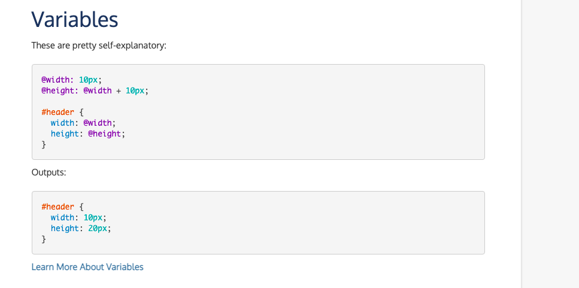
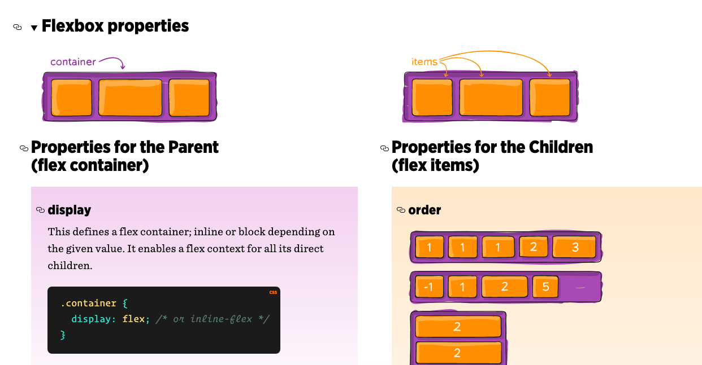
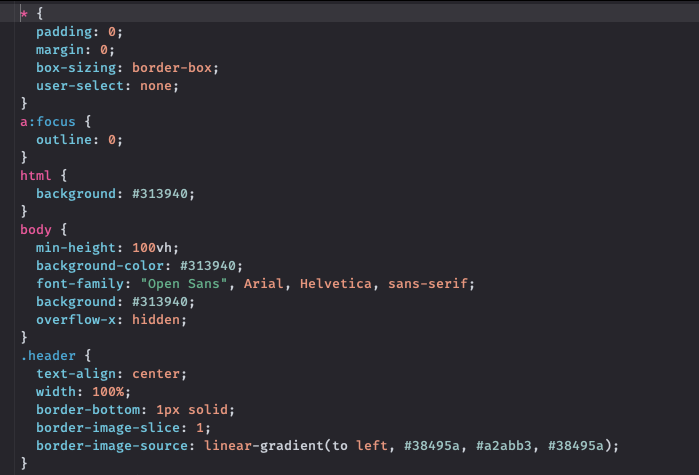

Каскадные таблицы стилей (CSS) - это язык, который используется для иллюстрации внешнего вида, стиля и формата документа, написанного на любом языке разметки. Проще говоря, он используется для стилизации и организации макета веб-страниц. CSS3 является последней версией более ранней версии CSS2.
Существенным изменением в CSS3 по сравнению с CSS2 является введение модулей. Преимущество этой функциональности заключается в том, что она позволяет завершить спецификацию и принять ее быстрее, поскольку сегменты завершаются и принимаются порциями. Кроме того, это позволяет браузеру поддерживать сегменты спецификации.
Некоторые из ключевых модулей CSS3:
- Модель коробки
- Значения изображений и замененный контент
- Текстовые эффекты
- Селекторы
- Фоны и границы
- Анимации
- Пользовательский интерфейс (UI)
- Расположение нескольких столбцов
- 2D / 3D преобразования
Особенности CSS3
Особенности CSS3 следующие:
Selectors
Селекторы позволяют дизайнеру выбирать более точные уровни веб-страницы. Это структурные псевдоклассы, которые выполняют частичное сопоставление, чтобы помочь сопоставить атрибут и значения атрибута. Новые селекторы предназначаются для псевдокласса, чтобы стилизовать элементы, нацеленные в URL. Селекторы также включают проверенный псевдокласс для стилизации отмеченных элементов, таких как флажки и переключатели.

Препроцессоры и другие варианты реализации CSS
По умолчанию стили прописываются в текстовом файле, но это не единственный вариант. Базовый CSS не обладает преимуществами сложных языков программирования, переменными или вложением свойств. Поэтому разработчики создали препроцессоры наподобие LESS. Это механизм на базе JavaScript, позволяющий внедрить в работу со стилями синтаксис и некоторые примитивные функции из JavaScript.

Страничные медиа и сгенерированный контент
У CSS 3 есть дополнительные опции в Paged Media, такие как номера страниц и верхние и нижние колонтитулы. Также есть дополнительные свойства для печати сгенерированного контента, такие как свойства для перекрестных ссылок и сносок.
Многостолбцовый макет
Эта функция включает свойства, позволяющие дизайнерам представлять свое содержимое в нескольких столбцах с такими параметрами, как число столбцов, расстояние между столбцами и ширина столбцов.
Основные принципы построения макетов с помощью CSS
Одна из ключевых задач CSS в современной верстке – создание макетов сайта. HTML уже не играет такой важной роли в том, как будут размещены объекты. HTML-документ отвечает за структуру и вложенность элементов, что упрощает чтение сайтов скринридерами и дальнейшую разметку с использованием каскадных стилей.

Синтаксис разметки
Язык CSS быстро стал стандартом в веб-разработке, потому что он позволяет быстро изменить визуальное оформление сайта, не прибегая к использованию более сложных языков программирования.

Достаточно ознакомиться с простейшими правилами CSS, и можно легко собрать вполне симпатичный сайт со всем необходимым контентом. «Простота» обеспечивается за счет понятного синтаксиса.
Вместо заключения
CSS – это мощный инструмент для оформления сайтов, без которого невозможно сделать красивую страницу (даже если использовать какие-либо фреймворки типа React). Глубокое изучение каскадных таблиц поможет сделать ваши сайты более стильными, при этом не перебарщивая с количеством JS-кода, что положительно скажется на производительности ресурса.